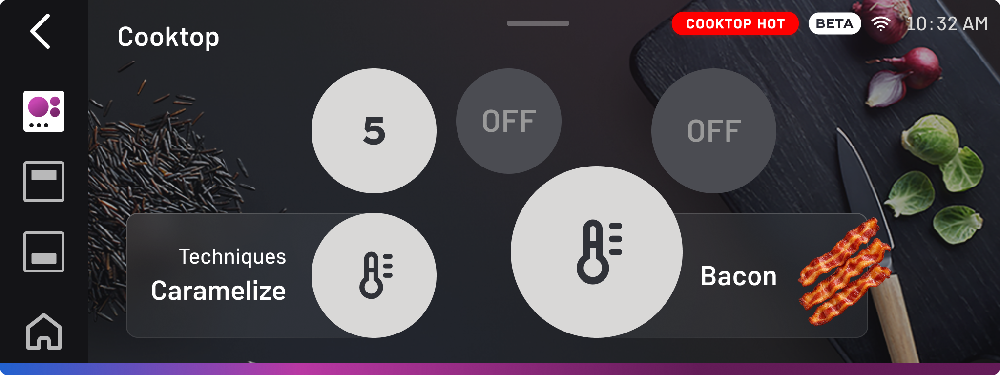
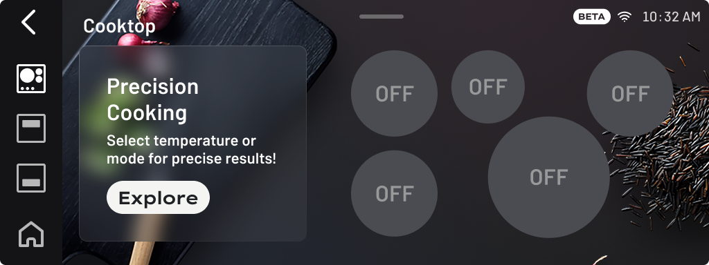
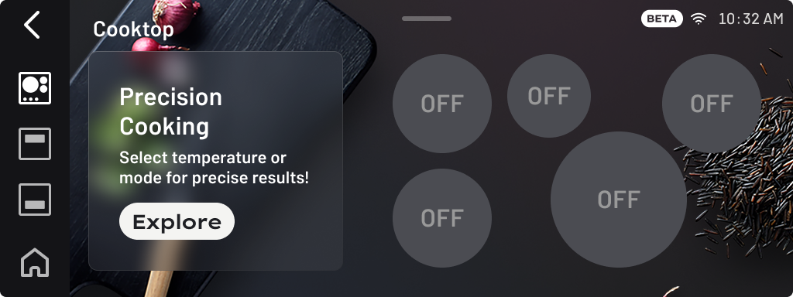
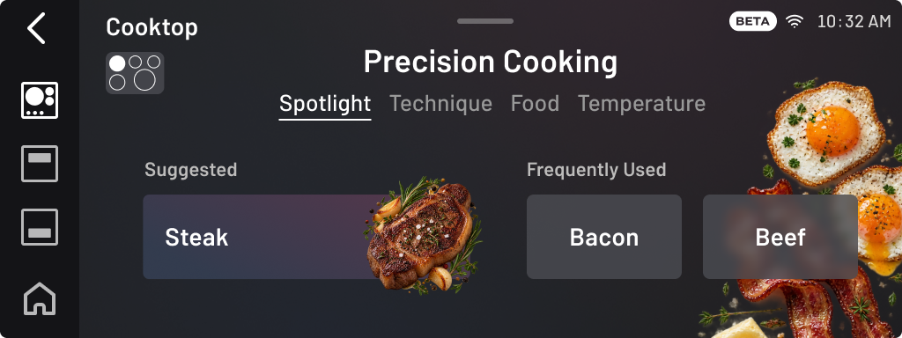
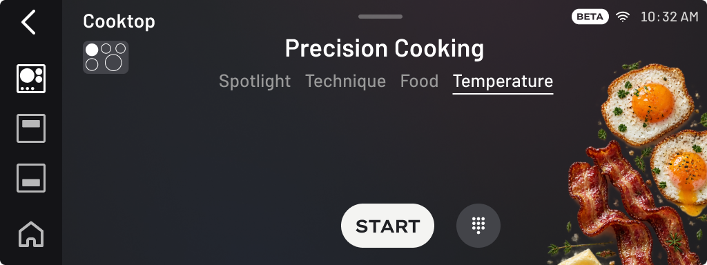
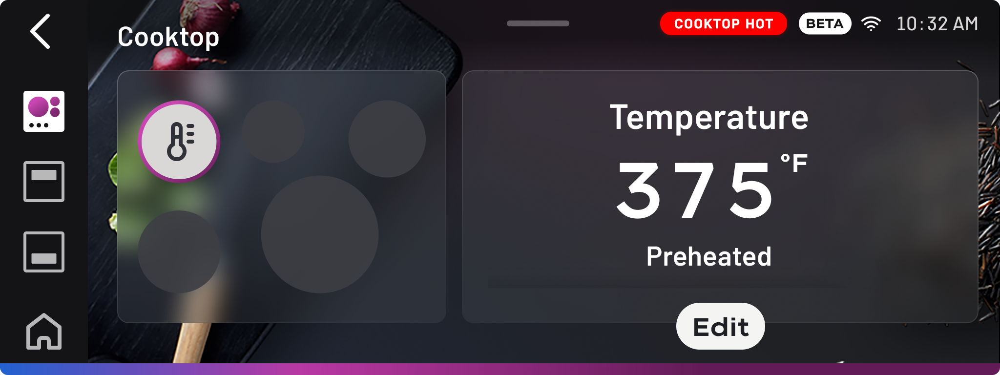
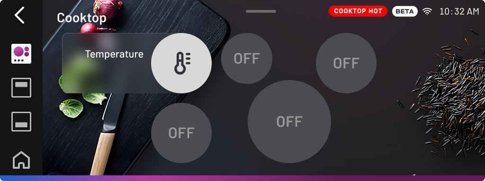
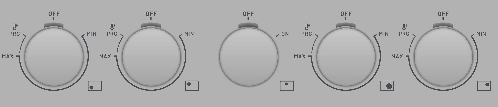

STANDBY
Screen Hidden for Testing
Tap 0.5s / 1s / 2s above to reveal to participant



370
°F


Turn Knob 1 below to PRC to begin

Starting Precision Cooking in 3s.



182
°F
375
°F

375
°F

